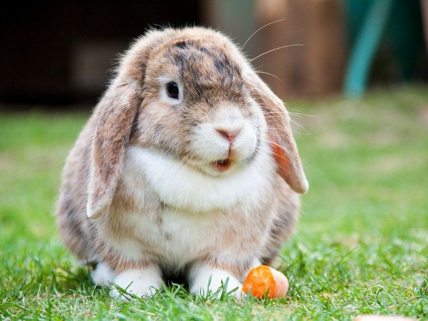
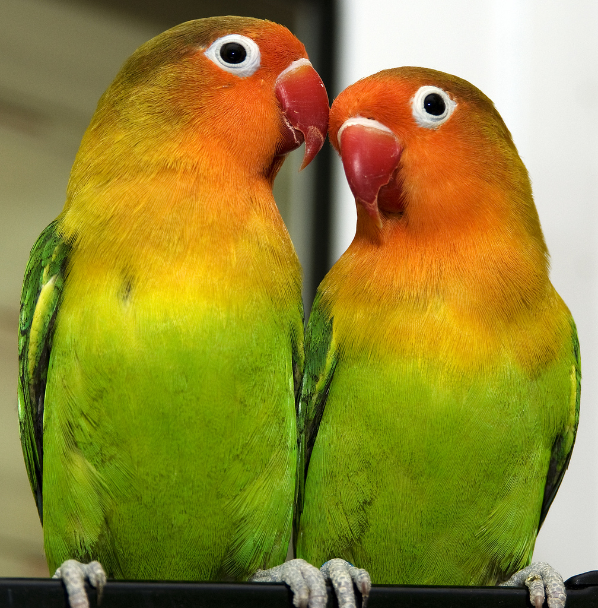

Bienvenidos a nuestro club
Las mascotas, como los seres humanos, requieren un espacio limpio y cómodo en el que puedan dormir, descansar, comer, jugar y pasar su tiempo. La zona en la que el peludito encuentra el agua y la comida debe mantenerse libre de basuras y otras impurezas, lo mismo la que usa para dormir.
Lo ultimo de nuestro blog
Los animales necesitan cariño
Camina con tu mascota
Para muchos de nosotros las mascotas no son simples compañeros, son miembros de la familia que debemos cuidar y proteger.

Max

Jerry

Tom
